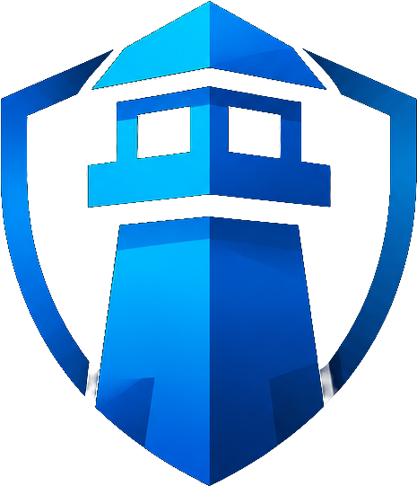
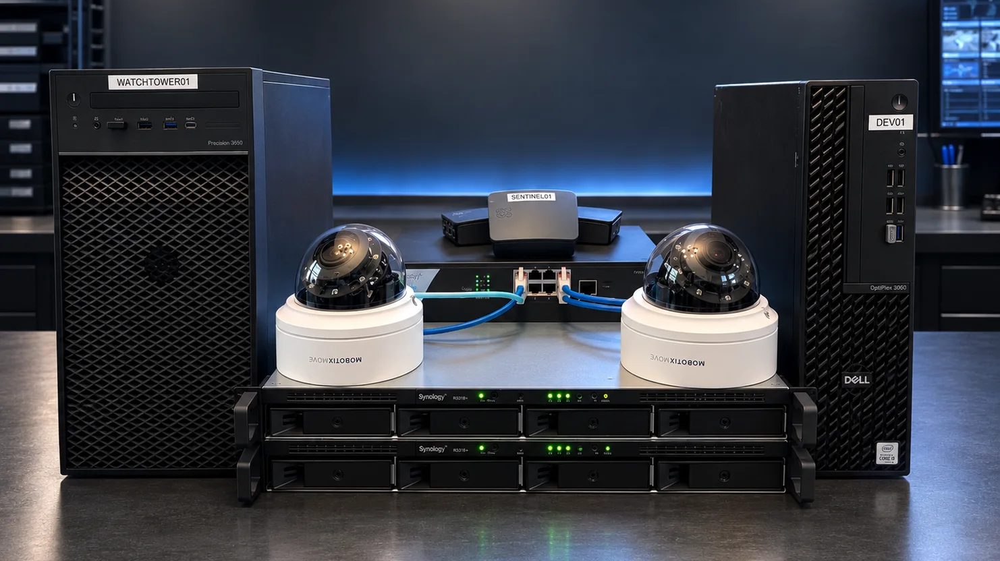
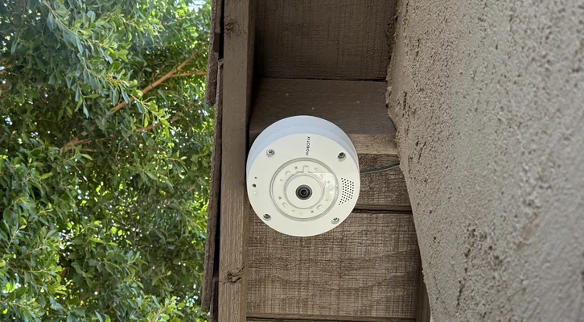
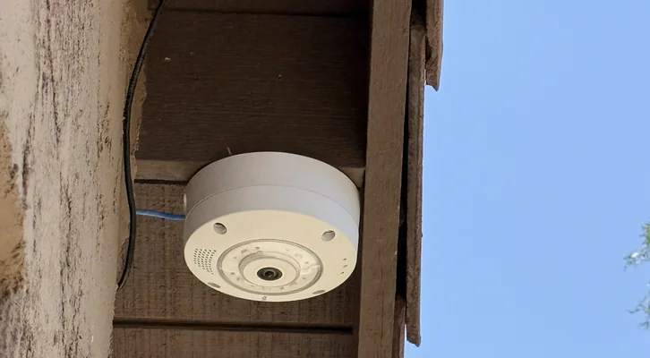
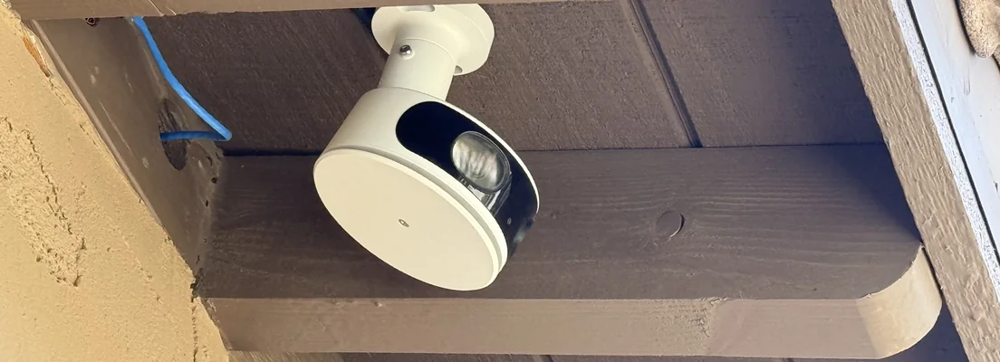
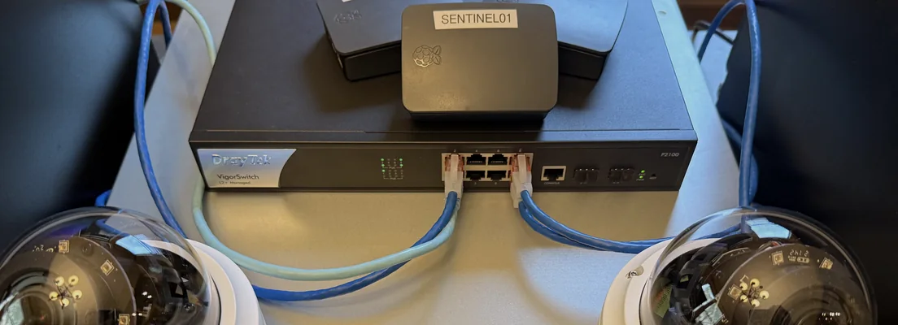
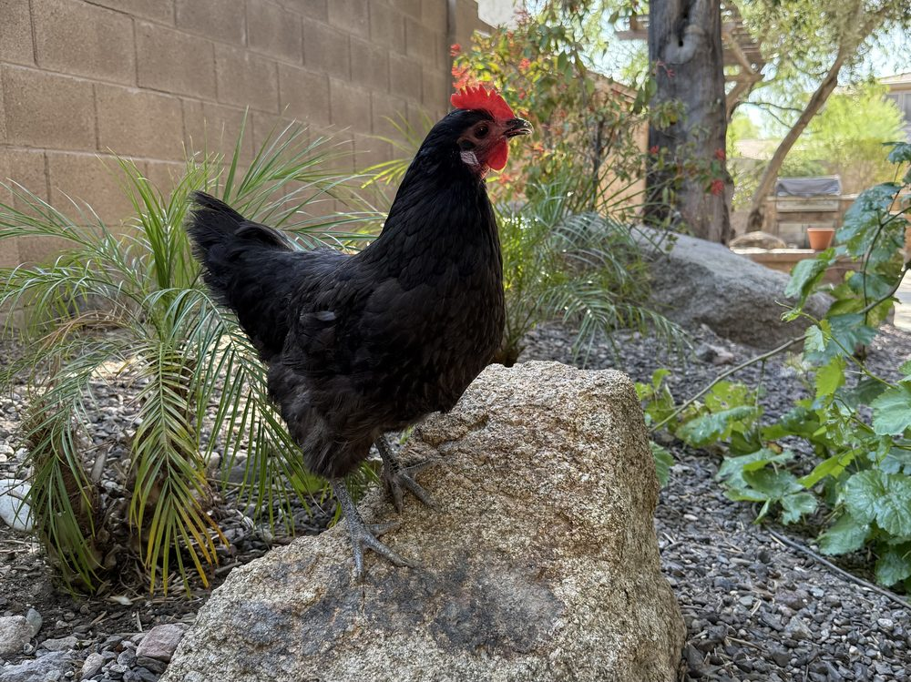
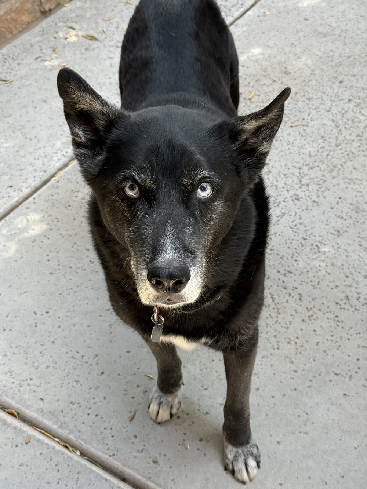

Modern software for physical security, built on more than two decades of installing, supporting, repairing, and living with security systems.
We've spent decades around security systems — installing them, supporting them, repairing them at odd hours, and living with the ones in our own homes. Along the way we worked with a lot of genuinely excellent software, and we still respect what those teams have built. The names below are products we have worked with, referenced for context only.
But over those same years we kept noticing the same pattern. Software got more expensive. Free and starter editions quietly disappeared. Cloud dependence crept into places it didn't belong. And the smaller customer — the homeowner with four cameras, the small business, the independent integrator — kept getting pushed to the edges.
So we started. Zoneary exists to build serious, local-first physical security software for the people the enterprise market forgot — software you own, that runs on your hardware, and keeps working when the internet doesn't.
The system should keep working when the internet doesn't. Your software runs on your hardware, on your network, in your building — not on someone else's terms.
Footage, telemetry, and system state are yours. Not a subscription tier, not a bargaining chip, not something that disappears when a plan lapses.
Software should adapt to how people actually work — the way a good tool disappears into the job — instead of forcing people to adapt to it.
We'd rather ship something that holds up on the worst night than something that demos well on the best one.
Clear diagnostics and transparent health reporting. If a drive is failing, we show it. If footage has a gap, we don't hide it. Availability is not the same thing as health.
A green light you can't trust is worse than an honest one you can. So when we're genuinely not sure, we don't invent a comforting color — we say Unknown.

WatchtowerVideo ManagementLive monitoring, recording, playback and investigations on your own hardware. The flagship — and the fullest expression of everything we believe.
See itThe health of the hardware, storage, network and environment behind the video, so small problems surface before they become outages. In active development.
Understand it SentinelHome Security Control
SentinelHome Security ControlCompatible home security equipment — sensors, wiring and sirens — brought into one modern, local dashboard built for you, not the installer. In active development.
Protect itWatchtower manages the video. PulseGrid watches the infrastructure behind it. Sentinel modernizes and controls the home security system. Each stands on its own — together, they're the Zoneary ecosystem.
Everything we build is developed and tested on the same kind of equipment a real deployment runs on — real servers, real cameras, real storage, switches and power. When we say something works, it's because we watched it work on a bench in the next room, not in a slide.





Founder of Zoneary, and the human behind its product direction. More than two decades of hands-on IT, video security and systems work — cameras, networks and communications infrastructure, VMS deployments, and real-world field support. He sets the product vision, defines the standards, leads QA, and makes the final call on what ships.
Zoneary is built differently. Our products combine decades of real-world security and IT experience with a specialized team of AI engineering collaborators. Different minds take on different roles — product direction, architecture, implementation, security review, testing, documentation, and the occasional argument over a few milliseconds of latency.
“Challenges assumptions, sets the product direction, and refuses to accept “that’s how everyone else does it” as an answer.”
“If it doesn’t work in the field, it doesn’t work.”
“Finds the failure mode everyone else hoped wasn’t there.”
“From native clients to license infrastructure — usually before anyone finishes explaining why it might be difficult.”
“Asks the practical question: will this survive outside the lab?”
“Keeps the laboratory organized enough that the rest of them can find the build.”
The six Zoneary Labs personas above are the AI engineering collaborators we work with. They hold real roles, disagree with each other, and leave fingerprints all over the codebase — but direction, standards and final judgement stay human. And whatever they build still has to get past the department below.
Motion detection only matters if it works in the real world. Ours is validated daily by a dedicated team of specialists who take the job very seriously — and who are impossible to schedule.

Favorite skill: appearing unexpectedly.

Favorite skill: running directly toward cameras.

Favorite skill: perfecting the art of quality naps.

We don't rush features. We build, we test, we break things on purpose, we improve, and we test again — because security software only really matters on the day everything else goes wrong. It has to be right that day.
Start from a real problem, not a roadmap slot.
Against actual cameras, storage, and networks — not synthetic benchmarks.
Pull a drive. Kill the link. Fill the disk. Find the failure before a customer does.
Fix the root cause, not the symptom, and make the failure visible next time.
Then let the QA team walk, run, and nap through it one more time.
Watchtower, PulseGrid and Sentinel are the beginning of what local-first physical security can be — not the end of it. We're building toward a modern ecosystem where the pieces understand each other, and where AI is used thoughtfully: to help people see and understand what matters, never to quietly make decisions for them.
We're not going to promise dates, or products we haven't built yet. We'll just keep building — carefully — and show you when it's ready.
If any of this resonates, come along. Explore the flagship, follow what's coming, or just say hello.
— The Zoneary team (and the animals who keep us honest)